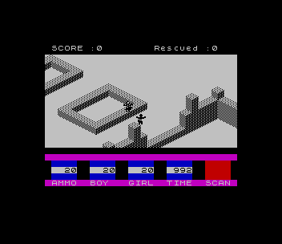

01 · Ant Attack
Every rescue takes place in the same city
Antescher stays fixed across the ten rescues. The captive changes position, including the height at which they stand. The dot marks the selected location on this plan of the city.
Click a map column to read its occupied heights.
Darker columns contain higher blocks. Magenta marks the captive; the cyan outline marks the city boundary. X increases to the right and Y downward. The map shows the columns as the tape supplies them, including occupancy that the moving ants can change.

A column's bits distinguish a stack of blocks from a roof over an empty space. Selecting a layer exposes those gaps. The collision routine tests the same individual bits that this map draws. Sources: $8380, $8920, and $C000.
02 · Ant Attack
The previous rescue selects the next location
The first captive has one position. Each later rescue has four. The game takes the previous rescue's remaining time modulo four to choose a position, then keeps that choice during retries. Two completions a single time unit apart can therefore lead to different roofs.
The location records are BASIC DATA triples: X, Y, and height. The selected record is shown above with its source address. The selection code is at $69B5 and $6A23.
| Rescue | Locations | Ant movement |
|---|
The first ant keeps its original movement schedule. The last four become faster after rescues four and eight. The schedule demonstration shows the difference.